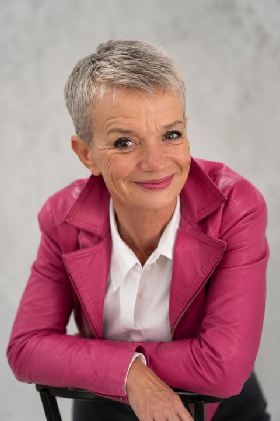

09:15
Die richtigen Fragen öffnen den Raum.
Inhouse-Konferenzen für Zielgruppen im Wandel
Ihre Konferenz inspiriert, verbindet und setzt etwas in Bewegung – auch über den Veranstaltungstag hinaus.
KonferenzWerk verbindet Inhalte, Speaker, Moderation und Dramaturgie zu einem stimmigen Ganzen – damit aus einem Veranstaltungstag etwas entsteht, das bleibt.
Die richtigen Fragen öffnen den Raum.
Aus Zuhören wird Mitmachen.
Was morgen weiterarbeitet.
Erprobtes Referenzformat
Hier wird sichtbar, wie Zielgruppenwissen, Programm, Speaker, Moderation und Teilnehmerweg zu einem Ganzen werden. Dieses Prinzip überträgt KonferenzWerk auf weitere Zielgruppen.
Referenzbeispiel ansehenKeine bloße Vortragsliste
Ihr Nutzen
Sie vermeiden teure inhaltliche Umwege. Ein unabhängiger Blick verbindet Unternehmensziel, Zielgruppe und Dramaturgie – damit Beiträge passen, sich nicht wiederholen und ein schlüssiger Konferenztag entsteht.
Sie erhalten eine klare Linie statt einer Themensammlung. Eine Leitidee gibt Themen, Speakern, Reihenfolge und Formaten einen gemeinsamen Maßstab.
Sie werden inhaltlich und organisatorisch entlastet. Entscheidungen sind begründet, Zuständigkeiten klar und Speaker verlässlich geführt. Am Konferenztag bleibt Raum für Ihre Gastgeberrolle.
Die Wirkung wird von Anfang an mitgedacht. Werkzeuge, Austausch, Kontakte, nächste Schritte und digitale Begleitung bringen Impulse in den Arbeitsalltag.
Vier Leistungsbereiche
Klar umrissen, transparent angeboten und passend zu dem, was intern schon vorhanden ist.
Das tragfähige Konzept. Zielklärung, Thema, Dramaturgie, Formatmix und begründete Speaker-Empfehlungen.
Passende Stimmen, sauber geführt. Recherche, persönliche Ansprache, Honorarabstimmung, Koordination und inhaltliches Briefing.
Ein roter Faden, der im Raum trägt. Vorbereitung, Übergänge, Beteiligung und Timing am Konferenztag.
Einfach für Teilnehmende. Übersichtlich für Sie. Konferenzwebseite, Anmeldung, Trackbuchung, Erinnerungen und Feedback.
Kein Standardpaket: Sie erhalten nach dem Erstgespräch ein Angebot, das zu Umfang und Ausgangslage passt.
Konferenzentwicklung im DetailMeine Arbeitsweise
ZuhörenVerdichtenVerbinden
Ich erkenne, was Ihre Zielgruppe wirklich bewegt.
Ich übersetze Ziel und Zielgruppe in eine klare Leitidee.
Ich entwickle einen Ablauf, der trägt, aktiviert und verbindet.
Ich finde Speaker, die Inhalt und Zielgruppe zusammenbringen.
Digital, wo es hilft
Die Konferenz bleibt vor Ort. Digital wird nur, was Anmeldung, Orientierung und Nachbereitung für Teilnehmende und Organisation einfacher macht.
Teilnehmerweg · passend konfiguriert
vorher → vor Ort → danachAndrea Kaden · Gründerin von KonferenzWerk · Konferenzentwicklerin
Ich habe unzählige Konferenzen erlebt: die inspirierenden, die überraschenden und die, bei denen ein gutes Thema auf der Bühne verpufft ist.
Heute verbinde ich dieses Erfahrungswissen mit genauer Zielgruppenarbeit. Ich weiß, wann ein Publikum einen neuen Gedanken braucht, wann Beteiligung, wann eine Pause – und welcher Speaker sich wirklich auf die Menschen im Raum einstellen kann.
Seit 2020 entwickle ich selbst zielgruppenspezifische Inhouse-Konferenzen – bislang acht Formate mit 50 bis 300 Teilnehmenden, vier davon selbst moderiert. Konferenzentwicklung und Zusammenarbeit sind auf Deutsch oder Englisch möglich; auf der Bühne moderiere ich auf Deutsch.
KonferenzWerk ist mein Rahmen dafür: klar in der Verantwortung, persönlich in der Zusammenarbeit und immer mit Blick auf das, was nach dem letzten Programmpunkt bleiben soll.

Zwei gute Einstiege
Sie haben noch kein fertiges Briefing? Kein Problem. Bringen Sie einfach mit, was gerade da ist: ein Ziel, eine Frage oder ein Problem. Den Rest entwickeln wir gemeinsam.
Termin und Zielgruppe stehen. Jetzt braucht es Leitidee, Formatmix und passende Speaker. Wir klären den Auftrag und die nächsten Schritte.
Wir schärfen Ziel, Zielgruppe, erwartete Wirkung und realistischen Rahmen. Sie erhalten eine kompakte Entscheidungsgrundlage für interne Freigaben.
Kurz geklärt
Ja. Konzeption, Speaker-Management, Moderation und digitaler Teilnehmerweg sind einzeln möglich. Im Erstgespräch klären wir, was bereits vorhanden ist und wo meine Arbeit den größten Unterschied macht.
Ja. Ich übernehme Recherche, Auswahl, Ansprache und Briefing. Wenn Beiträge nicht zur Zielgruppe passen, sich wiederholen oder eine inhaltliche Lücke bleibt, spreche ich das offen an.
Für unterschiedliche interne Fach- und Berufsgruppen. Entscheidend ist nicht die Branche, sondern dass eine konkrete Zielgruppe durch eine Präsenzkonferenz weitergebracht, verbunden oder in Veränderung gestärkt werden soll.
Der Preis richtet sich nach Ausgangslage, Leistungsumfang und Zeitrahmen. Nach dem Erstgespräch erhalten Sie ein passendes Angebot statt eines unpassenden Standardpakets.
Der nächste Programmpunkt
Erzählen Sie mir in 30 Minuten, was Sie vorhaben. Ich sage Ihnen offen, wo ich sinnvoll unterstützen kann.